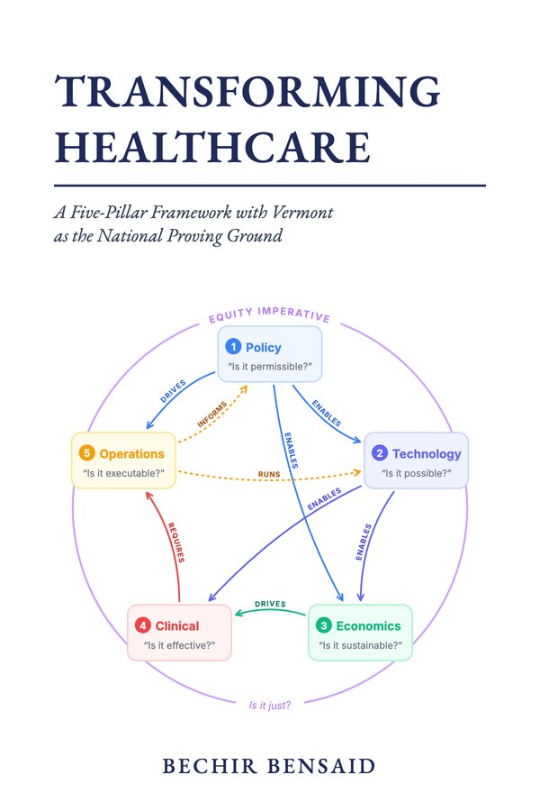

The record of what was built: five slides, one per pillar, in the order Chapter 1 says transformation has to happen, each opening a sourced 2026 briefing. The drawings and slide text on this page are generated from the code that ships.
/about/framework, /briefings and the cover art.lib/taxonomy/pillars.ts.Policy at the top centre, the sequence running clockwise, as on the original cover. Sequence numbers sit inside the cards. No centre hub.
Each arrow takes the colour of the pillar it comes from. Its type is written on it, curved along the line, using the verbs of Figure 1.3. Feedback loops are dashed.
“EQUITY IMPERATIVE” and “Is it just?” are set into the ring's two gaps, curved, in the ring's colour. On each slide, one light-italic line at the foot.
On a slide, the pillar and every arrow touching it stay lit. Uninvolved pillars stay readable at 60%, their arrows at 30%.
Superscript numbers on every figure; an “As of” date on every slide. npm run check:briefings fails on an uncited figure, a broken citation, a mismatched course title, or content older than 120 days.
Visible pause control, pause on hover and focus, arrow keys, no auto-advance under reduced motion. Navigation is the labelled five-step sequence.
Reproduced from lib/briefings with drawings rendered by the shipping component. Under each, the briefing's sections and the platform links it uses.

The cover keeps the serif title, rule, subtitle and author line, and replaces the old thin-circle diagram with the Five-Pillar Map, all arrows lit. In the manuscript this was a single image swap (word/media/image1.jpg) with no change to the document's XML, rendered by frontend/scripts/render-cover.tsx from the same component the platform uses.
The same artwork is the cover on /book and the thumbnail beside the map on every hero slide.
/briefings and /briefings/[slug], open on all four domains. /advisory/reports redirects here.
| Block | Status |
|---|---|
| Header, summary and three sourced figures (shared with the hero) | built |
| Analysis with inline numbered citations; Vermont section; “Is it just?” section | built about 600 words each |
| Research Lab tools, Academy courses, book chapters | built checked against tools.ts, live Supabase titles, /book anchors |
Ask the Analyst prompts (pre-fill /chat?q=) | built |
| Numbered sources with publisher, date, DOI and date checked | built |
| Narrated audio and video explainer | not built parked by the author |
| Briefings indexed for the AI Analyst | not built parked by the author |
| Item | What happened |
|---|---|
| Four empty Sanity “reports”, incl. “The State of Health AI 2025” | deleted backed up in sanity-backups/; report schema removed |
| Old hero: fake chart, “Join 500+”, non-existent course, broken RHTP logo | removed |
/vermont-rht-program | fixed $195M is the yearly award (FY2026), not a five-year total; KFF's “front-loaded” and “64% of cuts after FY2030” wording kept; scribe claim set to the trial result |
/book page | fixed title “Transforming Healthcare”; nine dependencies (from code); ~300 pages; real cover |
| Book, Chapter 5 table | fixed AI scribes save ~15–25 min/day/provider (NEJM AI RCT, 2025; JAMA, 2026), not an unsourced 30–45 |
| Book cover and 57 Cardo fallback runs | fixed via patch_docx.py, each with a backup and a page render |
| “Six pillars” in the Academy | fixed 2 course descriptions, 1 track, 2 lessons (incl. a six-card grid rebuilt as five pillars plus the Equity Imperative), 1 quiz question, 3 quiz answers; CalAIM heading and a changelog line in code |
| Pillar colours | fixed one palette across ~65 files, course player, state simulators, HTR Simulator, Research Lab badges (now derived from each tool's pillar), Policy Simulator accents |
Every source cited by the hero and briefings, each opened and the figure confirmed in its own text on the date shown.